01ファーストビューFirst view
3案。文字だけ／写真いっぱい／中央に小さな動画1本。
A文字だけを大きく。説明は右下に小さく参考：AREA 17 トップ
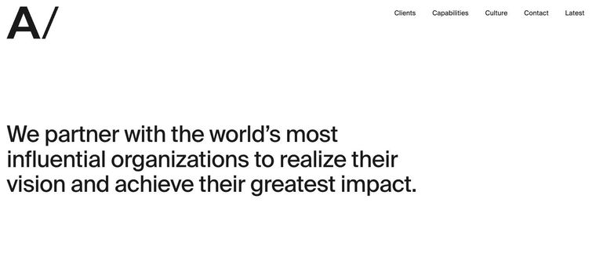
白地の左上に大きな文章だけを置き、画像は下へ回している。
→ 見出しを画面の幅いっぱいに大きく、説明文は右下に小さく。動画は次の節に回す。
Video Production
事業理解から、
伝わる動画をつくる。
会社紹介・サービス紹介・採用・SNSなどの実写動画を、事業理解に基づく企画から撮影・編集までワンストップで制作します。
B白いスタジオの写真を画面いっぱいに。照明だけが灯る参考：Pentagram トップ
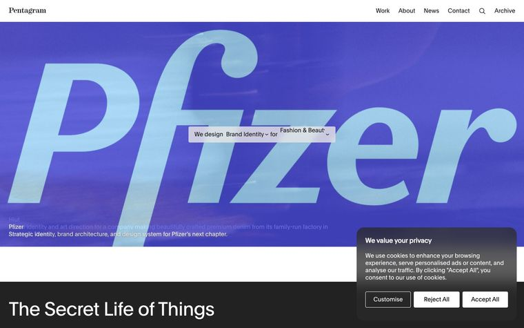
写真を画面いっぱいに置き、文字は隅に小さく黒で載せる。
→ 白いスタジオの写真を全面に。文字は写真の白い壁の上に置き、照明が一度だけゆっくり灯る。
Video Production
事業理解から、
伝わる動画をつくる。
会社紹介・サービス紹介・採用・SNSなどの実写動画を、事業理解に基づく企画から撮影・編集までワンストップで制作します。
C中央に明朝の一文と、縦の動画を1本だけ参考：Collins トップ
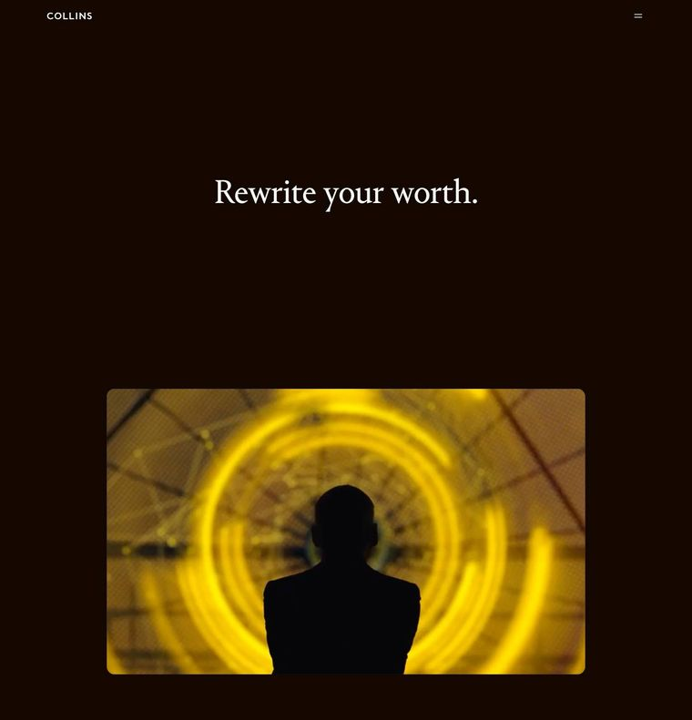
中央に明朝の一文、その下に画像を1枚だけ小さく置き、周りを大きく空ける。
→ 地を生成りに変え、画像の代わりに実績の縦動画を1本だけ流す。
Video Production
事業理解から、
伝わる動画をつくる。
会社紹介・サービス紹介・採用・SNSなどの実写動画を、事業理解に基づく企画から撮影・編集までワンストップで制作します。
02お悩みProblem
3案。3段組／大きな行の表／写真つきの縦の一覧。
A3つを横に並べ、上に細い線だけ参考：Pentagram About の Associates
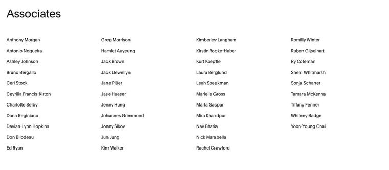
見出しの下に、同じ幅の段を横に並べるだけの組み方。枠も地色もない。
→ お悩み3つを3段に。各段の上に黒の細線を1本。
❶企画から撮影・編集まで、まとめて任せられる制作先がない
❷撮影はできても、事業や顧客に合った企画にならない
❸動画で何をどう伝えればよいか、社内で決めきれていない
B大きな文字の行を、罫線で区切って積む参考：AREA 17 Capabilities の Our approach
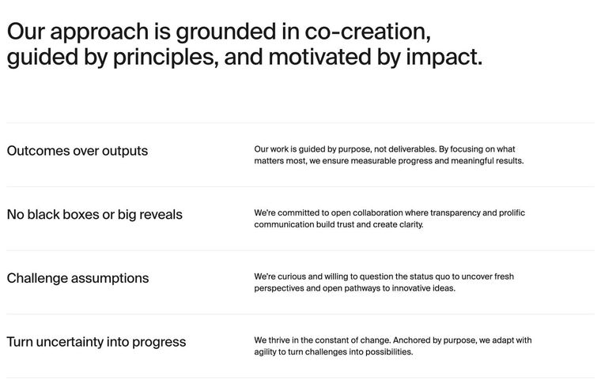
左に短い見出し、右に説明を置いた行を、細い罫線で区切って縦に積む。
→ 右の文を大きくし、悩みそのものを読ませる。左は番号だけ。
❶企画から撮影・編集まで、まとめて任せられる制作先がない
❷撮影はできても、事業や顧客に合った企画にならない
❸動画で何をどう伝えればよいか、社内で決めきれていない
C左に見出しを止め、右に写真と一覧参考：AREA 17 トップの Industries
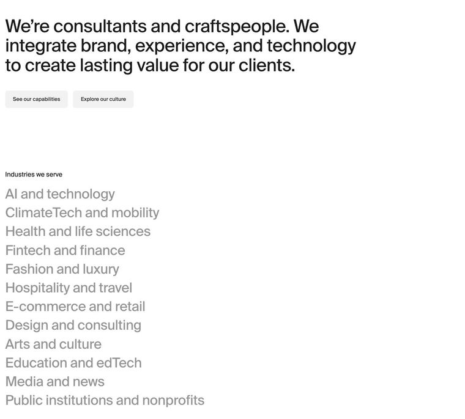
左に短い文章、右に罫線のない一覧を軽く並べる。
→ 左の見出しはスクロールしても止まる。右に自然光の写真を1枚足し、その下に悩みを並べる。
Photo P1
- ❶企画から撮影・編集まで、まとめて任せられる制作先がない
- ❷撮影はできても、事業や顧客に合った企画にならない
- ❸動画で何をどう伝えればよいか、社内で決めきれていない
03私たちについてAbout
3案。写真と文の左右／大きな見出し＋横長の写真／文字だけ。
A文を左、写真を右に。5:7で並べる参考：AREA 17 Capabilities（Brand）
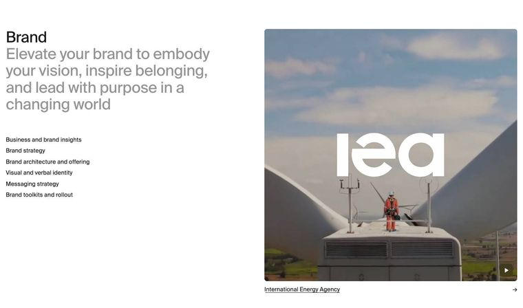
左に名前と灰色の説明、右に大きな写真。1つの話を1段で見せる。
→ 右に白いスタジオの写真（照明が灯る）。2つの強みは小さな点つきの行に。
About
事業の「伝えたいこと」を、
動画のかたちに
私たちは、事業理解に基づく企画から、撮影・編集までを一貫して手がける動画制作チームです。顧客・競合・自社の視点で伝えるべきことを整理し、専任チームと自社スタジオで、ブランドの世界観に沿った実写動画を制作します。
B大きな見出しの下に、横長の写真を全幅で参考：AREA 17 トップ
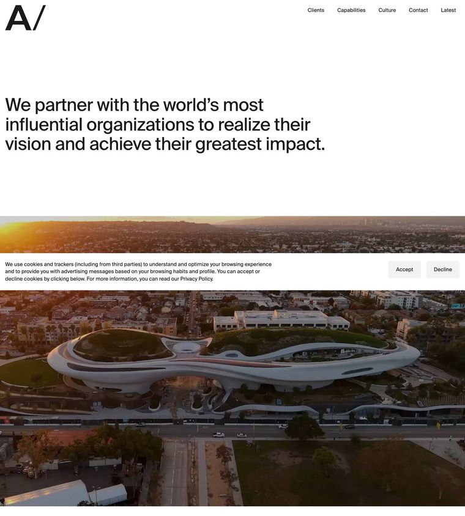
大きな文章のすぐ下に、横長の写真を画面の幅いっぱいに置く。
→ 写真を21:9に切り、下の左右に「クリエイティブスタジオ」「専門的な市場調査」を写真の説明のように置く。
About
事業の「伝えたいこと」を、
動画のかたちに
私たちは、事業理解に基づく企画から、撮影・編集までを一貫して手がける動画制作チームです。顧客・競合・自社の視点で伝えるべきことを整理し、専任チームと自社スタジオで、ブランドの世界観に沿った実写動画を制作します。
C写真なし。左に小さな見出し、右に大きな本文参考：Pentagram About
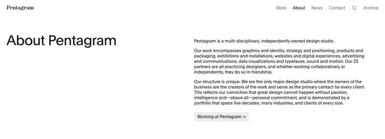
左に小さな見出し、右に本文だけ。本文のほうを大きく組む。
→ 見出しを小さく左に、本文を22px前後で右に。強み2つは本文の下に細線で。
About
事業の「伝えたいこと」を、
動画のかたちに
私たちは、事業理解に基づく企画から、撮影・編集までを一貫して手がける動画制作チームです。顧客・競合・自社の視点で伝えるべきことを整理し、専任チームと自社スタジオで、ブランドの世界観に沿った実写動画を制作します。
04実績の動画Works
4案。本番の動画（縦3本を横につないだ1本）と、縦長の静止画2枚だけで組んでいます。日本語の文は足していません。
A大きな1本を主役に参考：Pulse Films トップ
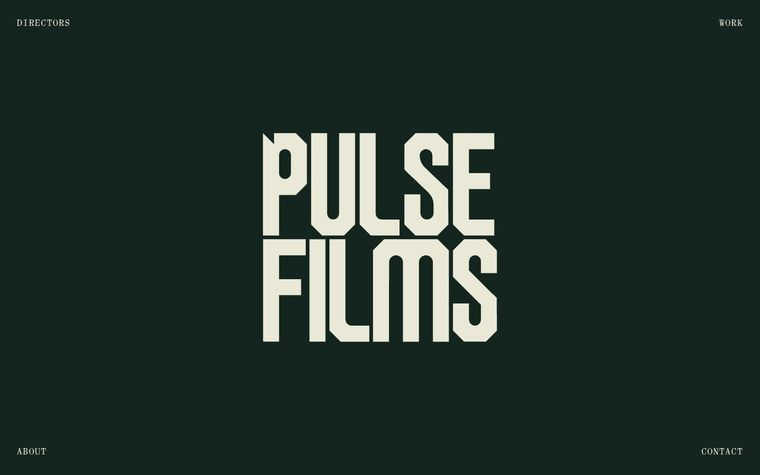
映像を画面いっぱいに流し、文字はロゴと隅のナビだけ。
→ 地を白に変え、本番の動画を横いっぱい（16:9）で1本だけ。下に小さく再生と停止。
B縦長の動画を横に並べ、高さをずらす参考：Collins Case Studies
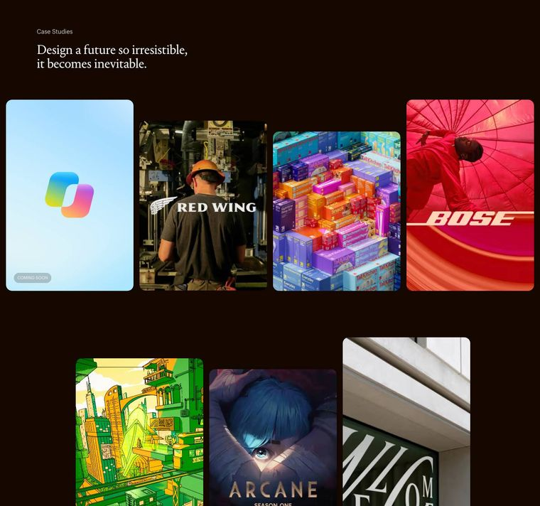
縦長の作品を横一列に並べ、1枚ずつ上下にずらして置く。
→ 縦の動画3本と静止画2枚を交互に5列。スマホは指で横に送る。
C文字の目次に乗せると、右に動画が出る参考：Somesuch Directors
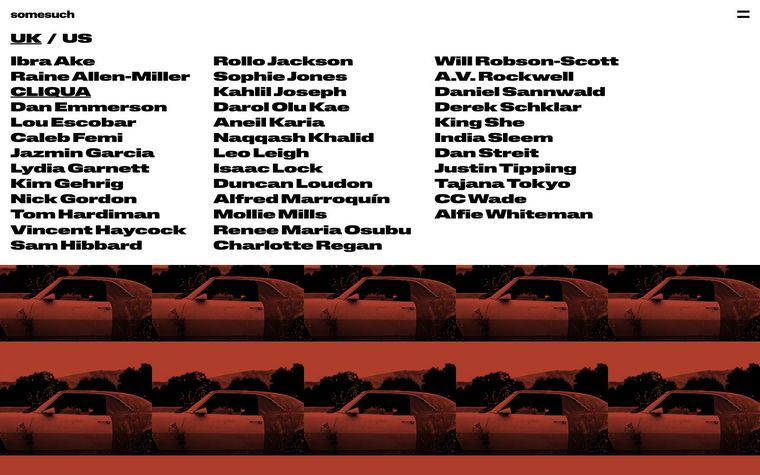
名前だけの目次。名前に乗せると、その人の映像が下に流れる。
→ 目次を左に縦一列、動画は右の縦枠に入れ替わって出る。スマホは枠を上に固定し、行を押すと切り替わる。
- 01Work 019:16 / Motion
- 02Work 029:16 / Still
- 03Work 039:16 / Motion
- 04Work 049:16 / Still
- 05Work 059:16 / Motion
D同じ大きさの格子に並べる参考：Pulse Films Work
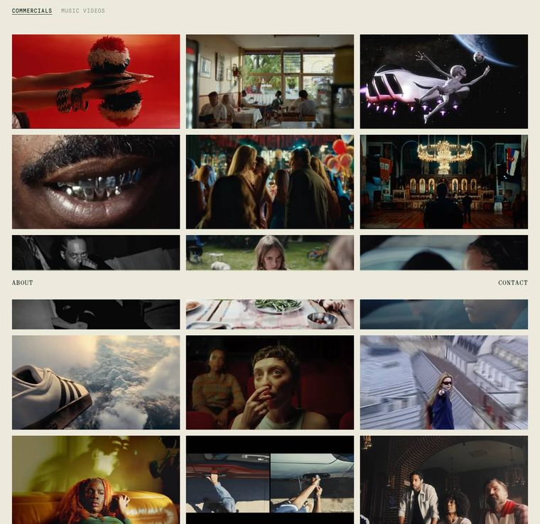
同じ比率の静止画を、すき間を揃えた格子に並べる。
→ 3列×2段。縦の動画3本・静止画2枚・スタジオの写真1枚を同じ4:5の枠に入れる。
05制作できる動画Menu
3案。罫線の表／6マスの格子／続けて読む大きな文字。
A罫線で区切った1列の表参考：Collins About の Programs

名前を1行ずつ、細い罫線で区切って並べる。
→ 6種類を1列の表に。乗せた行だけ文字が少し右に動き、水色の短い線が出る。
Menu
制作できる動画
実写の動画を、用途に合わせて企画・制作します。
- ❶会社紹介動画
- ❷サービス紹介動画
- ❸採用動画
- ❹SNS動画（ショート動画）
- ❺Web広告動画
- ❻展示会・イベント動画
B6マスの格子。番号は左上、名前は左下参考：Pentagram トップの作品格子
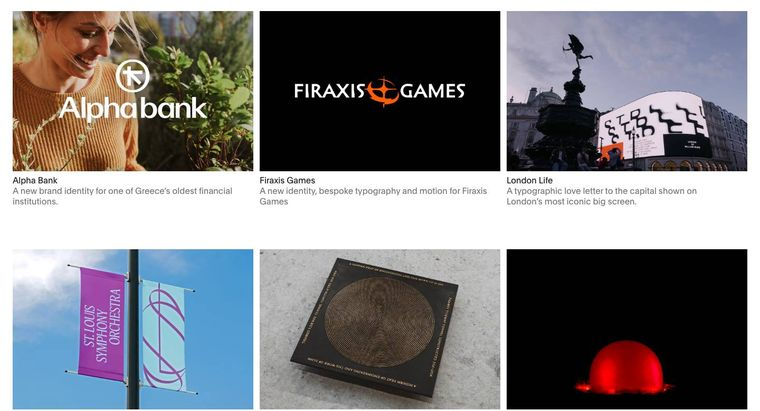
同じ大きさの区画を3列で並べ、各区画の下に名前を置く。
→ 画像の代わりに、上に黒の細線を引いた空の区画を3×2で。
Menu
制作できる動画
実写の動画を、用途に合わせて企画・制作します。
- ❶会社紹介動画
- ❷サービス紹介動画
- ❸採用動画
- ❹SNS動画（ショート動画）
- ❺Web広告動画
- ❻展示会・イベント動画
C6種類を、1つの文のように続けて組む参考：Somesuch Directors の名前一覧
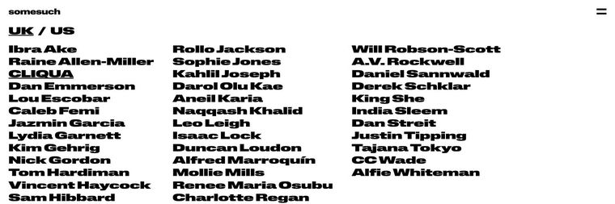
名前を区切らずに詰めて並べ、文字の塊として見せる。
→ 6種類を大きな文字で続けて流す。番号は小さく肩に。区切りは水色の小さな点。
Menu
制作できる動画
実写の動画を、用途に合わせて企画・制作します。
❶会社紹介動画❷サービス紹介動画❸採用動画❹SNS動画（ショート動画）❺Web広告動画❻展示会・イベント動画
063つの強みStrength
3案。写真と文の段／文字だけの静かな段／写真つき3段組。
A文を左、写真を右。1つの強みを1段で参考：AREA 17 About（Culture）
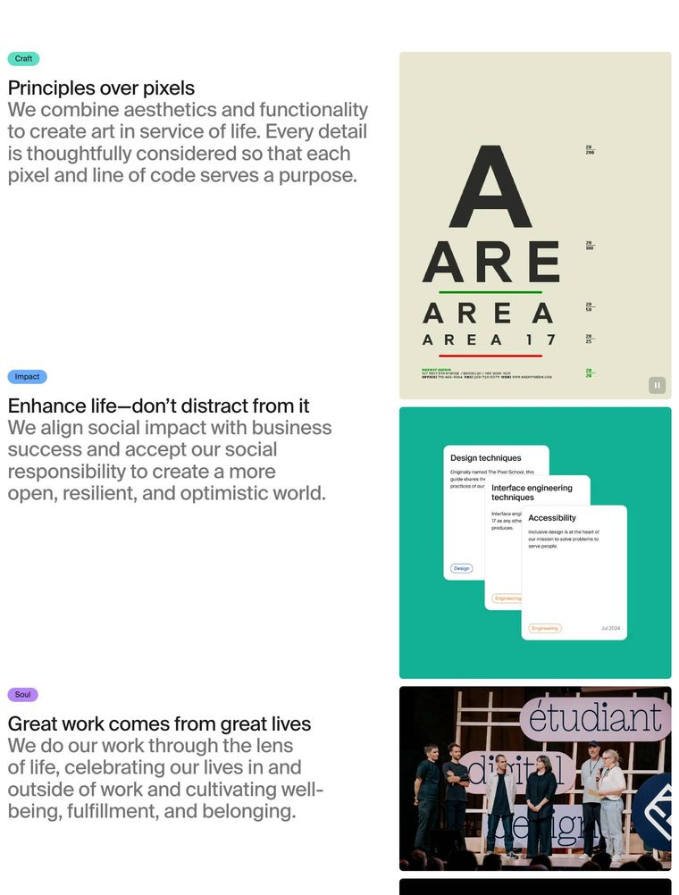
短い見出しと説明を左、画像を右に置いた段を、間を広く取って縦に3つ。
→ 写真は自然光の新しい写真2枚と、本番の制作例2枚。
01事業理解に基づく企画
顧客・競合・自社の3つの視点で事業を整理し、誰に何を伝える動画かを決めてから企画します。戦略から実行まで伴走する「Strategy2Action」の進め方を、動画の企画にも生かしています。
Photo P2
02企画から撮影・編集まで自社で一貫
社内クリエイティブチームが、企画から撮影・編集・仕上げまで一貫して対応します。ブランドの世界観を反映した、質の高い実写動画を制作します。
03国内への出張撮影に対応
撮影は、ご指定の場所に出張して行います。最短翌日から対応します（交通費・宿泊費は実費）。
Photo P3
B写真なし。細い線と小さな見出しで、静かに読ませる参考：Are.na About
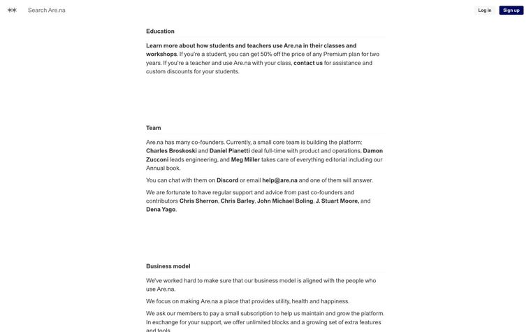
細い線の上に小さな太字の見出し、その下に本文。幅の狭い1列だけで組む。
→ 3つの強みを同じ形で縦に。左の余白に番号だけ置く。
01事業理解に基づく企画
顧客・競合・自社の3つの視点で事業を整理し、誰に何を伝える動画かを決めてから企画します。戦略から実行まで伴走する「Strategy2Action」の進め方を、動画の企画にも生かしています。
02企画から撮影・編集まで自社で一貫
社内クリエイティブチームが、企画から撮影・編集・仕上げまで一貫して対応します。ブランドの世界観を反映した、質の高い実写動画を制作します。
03国内への出張撮影に対応
撮影は、ご指定の場所に出張して行います。最短翌日から対応します（交通費・宿泊費は実費）。
C写真つきの3段組参考：Pentagram トップ（The Secret Life of Things）
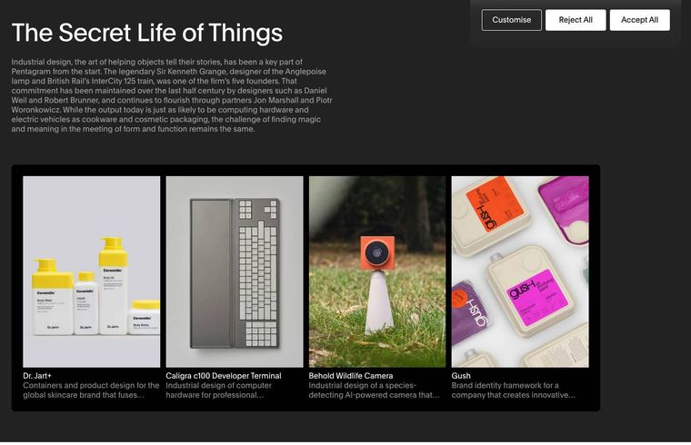
同じ大きさの写真を横に並べ、写真の下に短い題と説明を置く。
→ 地を白に変え、縦長4:5の写真3枚＋見出し＋本文の3段に。
Photo P2
事業理解に基づく企画
顧客・競合・自社の3つの視点で事業を整理し、誰に何を伝える動画かを決めてから企画します。戦略から実行まで伴走する「Strategy2Action」の進め方を、動画の企画にも生かしています。
企画から撮影・編集まで自社で一貫
社内クリエイティブチームが、企画から撮影・編集・仕上げまで一貫して対応します。ブランドの世界観を反映した、質の高い実写動画を制作します。
Photo P3
国内への出張撮影に対応
撮影は、ご指定の場所に出張して行います。最短翌日から対応します（交通費・宿泊費は実費）。
07流れWork Flow
3案。横に4段／大きな番号の表／写真を止めて手順を流す。
A横に4段。上の線がゆっくり伸びる参考：thoughtbot Product Design Services
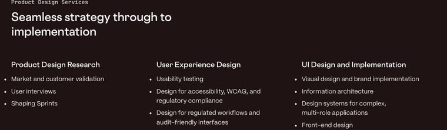
見出しの下に段を横に並べ、各段に小見出しと短い説明だけ。
→ 4つの手順を横に。上の細い線が左から伸び、各段の頭に小さな点。
Work Flow
企画から撮影・編集まで、一貫して制作
ヒアリングと企画から、撮影・編集、納品まで、社内チームが一貫して対応します。
- 1
ヒアリング・企画
事業や顧客、動画の用途をお伺いし、伝える内容と構成を企画します。
- 2
撮影
ご指定の場所に出張して撮影します。最短翌日から対応します。
- 3
編集
撮影した素材を、用途に合った長さと形式に編集します。
- 4
納品
ご確認いただいた内容を反映し、完成した動画を納品します。
B大きな番号＋見出し＋説明の3列の表参考：ustwo Services（Our offering）
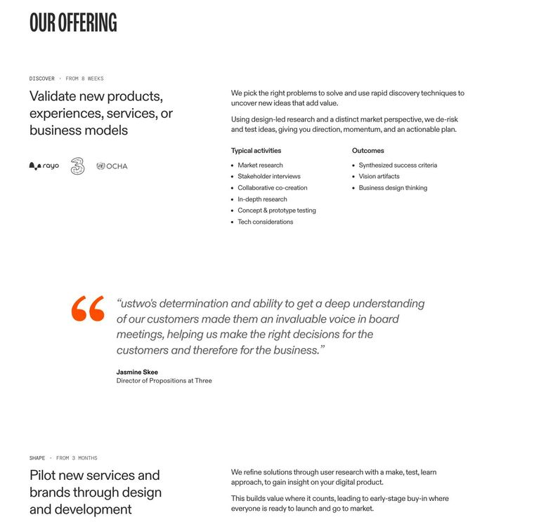
1行に「区分・見出し・説明」を並べ、行ごとに罫線で区切る。
→ 左に大きな灰色の番号、中央に見出し、右に説明。
Work Flow
企画から撮影・編集まで、一貫して制作
ヒアリングと企画から、撮影・編集、納品まで、社内チームが一貫して対応します。
- 1
ヒアリング・企画
事業や顧客、動画の用途をお伺いし、伝える内容と構成を企画します。
- 2
撮影
ご指定の場所に出張して撮影します。最短翌日から対応します。
- 3
編集
撮影した素材を、用途に合った長さと形式に編集します。
- 4
納品
ご確認いただいた内容を反映し、完成した動画を納品します。
C左の写真を止めたまま、右で手順を読む参考：AREA 17 Capabilities
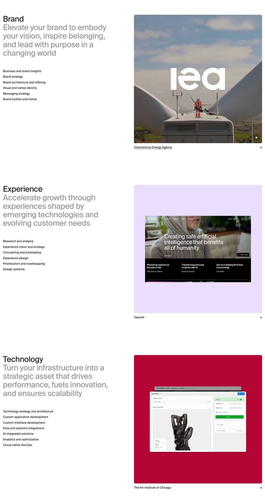
文と画像を左右に置いた段組み。
→ 左にスタジオの写真を止めておき（照明が灯る）、右で4つの手順を縦に送る。読んでいる段の番号に水色の点。
Work Flow
企画から撮影・編集まで、一貫して制作
ヒアリングと企画から、撮影・編集、納品まで、社内チームが一貫して対応します。
- 1
ヒアリング・企画
事業や顧客、動画の用途をお伺いし、伝える内容と構成を企画します。
- 2
撮影
ご指定の場所に出張して撮影します。最短翌日から対応します。
- 3
編集
撮影した素材を、用途に合った長さと形式に編集します。
- 4
納品
ご確認いただいた内容を反映し、完成した動画を納品します。
08費用・納期Price
3案。小さく静かに／左右2段／大きな見出しと行全体のボタン。
A幅の狭い1列で、小さく静かに参考：Are.na About

細い線の上に小さな見出し、本文は1列。色も飾りもない。
→ 同じ組み方で、最後に下線のボタンを1つ。
Price
費用・納期
動画の内容や本数、撮影の有無をお伺いしたうえで、ご相談によりお見積りします。撮影の出張にかかる交通費・宿泊費は実費です。
お問い合わせB左に小さなラベル、右に見出しと本文参考：Collins About（Capabilities）
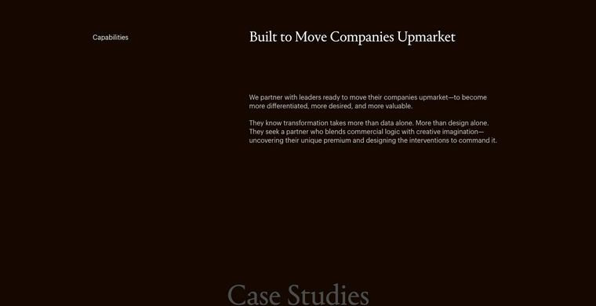
左に小さなラベル、右に見出しと本文の2段。
→ 地を白に変え、ボタンは黒の細枠の丸に。
費用・納期
動画の内容や本数、撮影の有無をお伺いしたうえで、ご相談によりお見積りします。撮影の出張にかかる交通費・宿泊費は実費です。
お問い合わせC大きな見出し。ボタンは行全体参考：AREA 17 トップの最後（Let’s explore…）
大きめの一文と、小さなボタン1つで締める。
→ 見出しを大きく、本文は右。下に画面幅の行を1本引き、行全体を押せるボタンにする。
動画の内容や本数、撮影の有無をお伺いしたうえで、ご相談によりお見積りします。撮影の出張にかかる交通費・宿泊費は実費です。
09メンバーMember
3案。2人の写真を並べる／小さな写真の表／名前を大きく、写真を左右交互。
A2人の写真を大きく並べる参考：AREA 17 About（Leadership）
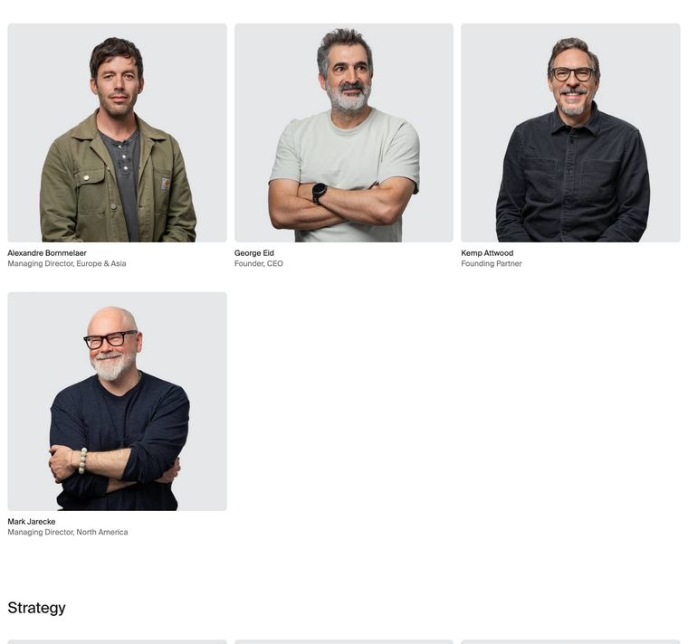
同じ比率の写真を並べ、下に名前と役職を小さく。
→ 2人を4:5で並べ、下に役職・名前・経歴。
Member
動画制作を担うメンバー
事業づくりとマーケティングの経験を持つ代表と、映像ディレクターの経験を持つメンバーが、企画から撮影・編集まで担当します。
代表取締役
橋本 圭司
大手通信会社の営業、事業企画、およびWebコンサル会社での経験を生かし、様々な業種・規模の企業でBizDev・マーケティングのコンサルとして事業を推進。
映像ディレクター
林 壮
東京生まれ、イギリス・シンガポール育ち。
映像ディレクターの経験を生かし、動画制作の企画・撮影・編集を担当。
B小さな写真つきの表参考：Pentagram About（Consulting Partner）
小さな写真の下に名前だけを置く、控えめな人物紹介。
→ 1人1行の表に。左に小さな正方形の写真、中央に役職と名前、右に経歴。
Member
動画制作を担うメンバー
事業づくりとマーケティングの経験を持つ代表と、映像ディレクターの経験を持つメンバーが、企画から撮影・編集まで担当します。
C名前を大きく、写真を左右交互に参考：Somesuch トップ
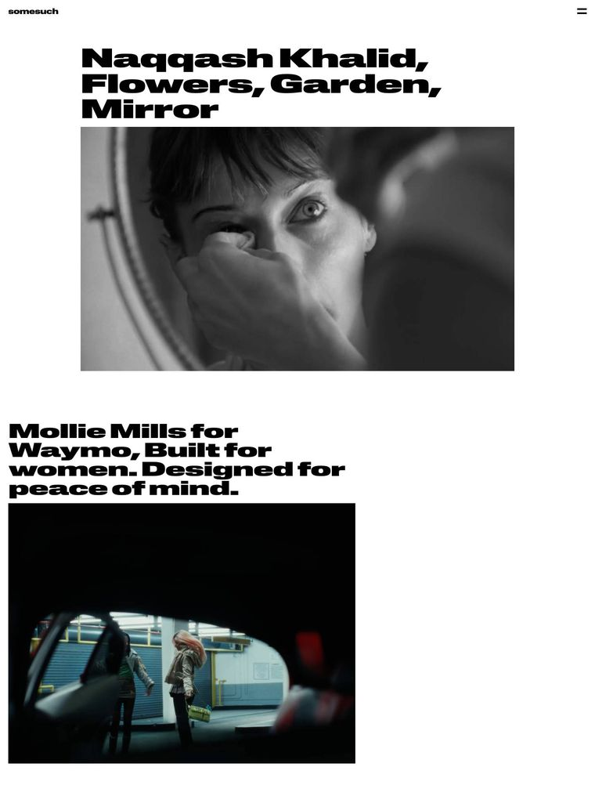
大きな太字の題と映像を、左右にずらしながら縦に並べる。
→ 名前を大きく、縦長の写真を左右交互に。経歴は写真の横に小さく。
Member
動画制作を担うメンバー
事業づくりとマーケティングの経験を持つ代表と、映像ディレクターの経験を持つメンバーが、企画から撮影・編集まで担当します。
代表取締役
橋本 圭司
大手通信会社の営業、事業企画、およびWebコンサル会社での経験を生かし、様々な業種・規模の企業でBizDev・マーケティングのコンサルとして事業を推進。
映像ディレクター
林 壮
東京生まれ、イギリス・シンガポール育ち。
映像ディレクターの経験を生かし、動画制作の企画・撮影・編集を担当。